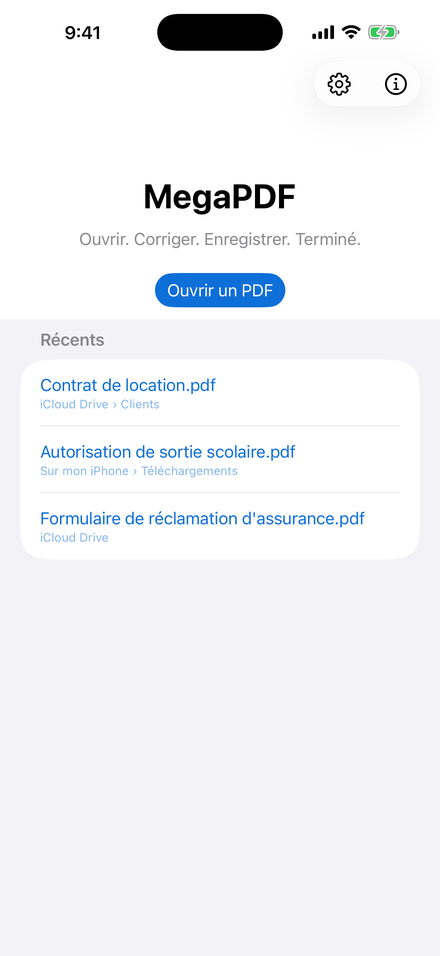
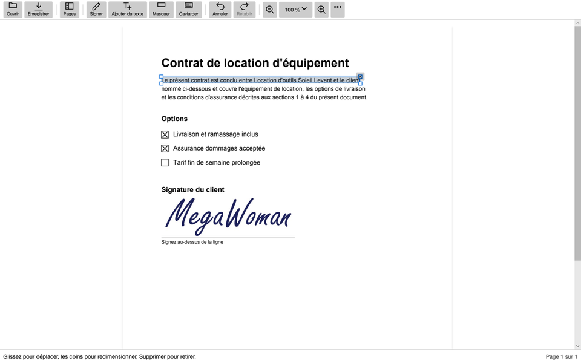
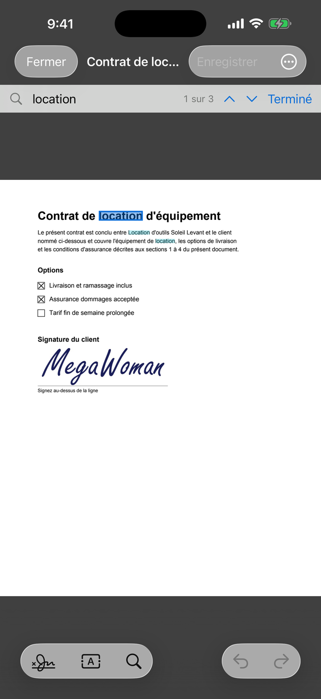
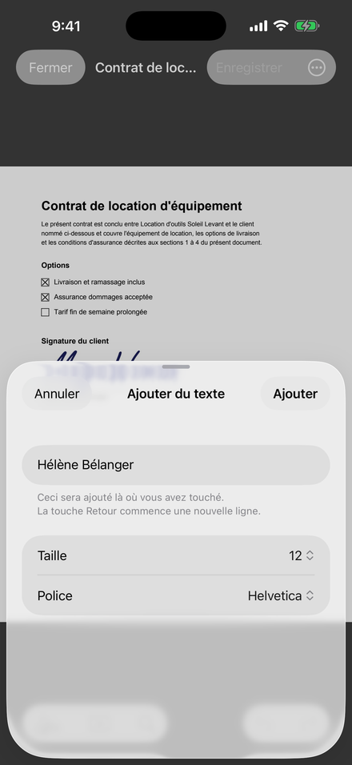
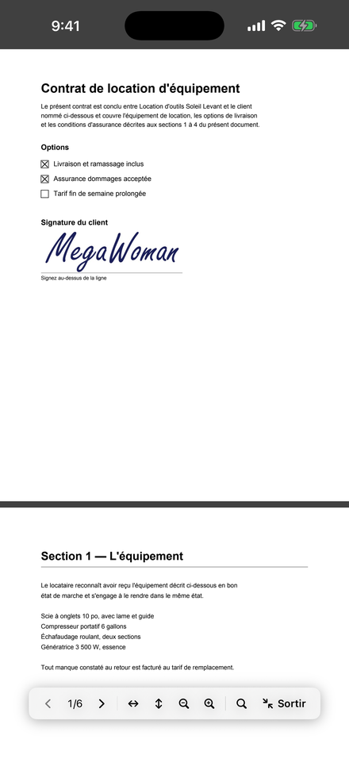
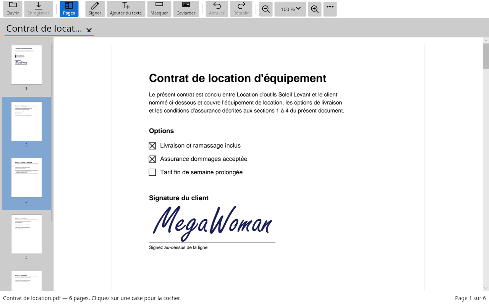
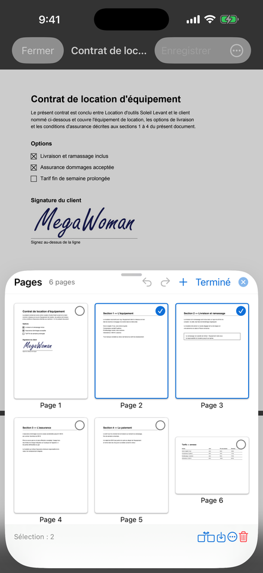
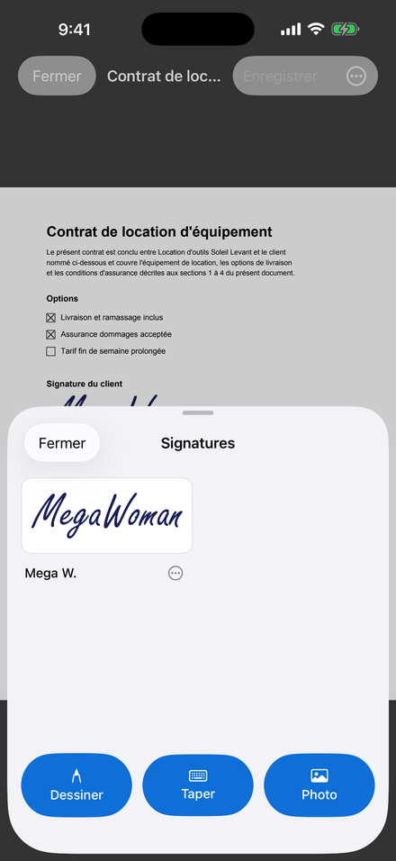
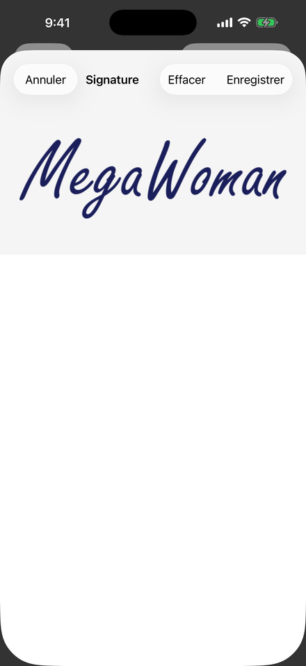

Ouvrez-le
Depuis le courriel où il est arrivé, depuis Fichiers, depuis une feuille de partage, ou d'un double-clic sur votre ordinateur. MegaPDF l'ouvre là où il se trouve.
Cochez les cases, écrivez sur les lignes, ajoutez votre signature et renvoyez-le, depuis votre téléphone ou votre ordinateur. Votre document ne quitte jamais votre appareil, et vous n'avez aucun compte à créer.


Aucun téléversement, aucun compte, rien à apprendre. Ouvrez le PDF comme vous ouvrez n'importe quel fichier : il est prêt à remplir.

Depuis le courriel où il est arrivé, depuis Fichiers, depuis une feuille de partage, ou d'un double-clic sur votre ordinateur. MegaPDF l'ouvre là où il se trouve.

Cochez n'importe quelle case, même un simple carré imprimé. Écrivez sur n'importe quelle ligne, dans une taille et une police assorties au formulaire. Puis ajoutez votre signature : dessinez-la, tapez-la, ou servez-vous d'une photo de celle que vous avez sur papier.

Enregistrez, puis partagez-le depuis votre téléphone ou joignez-le depuis votre ordinateur. Trop lourd pour un courriel? Réduire pour courriel en fait une copie plus petite, et vous dit franchement quand c'est impossible.
Un bail, une déclaration de revenus, un dossier médical : les PDF qu'on doit signer sont justement ceux qu'on voudrait le moins téléverser sur le serveur d'un inconnu. MegaPDF fait tout sur votre propre appareil.
| Un outil PDF en ligne typique | MegaPDF | |
|---|---|---|
| Où va votre document | Téléversé sur son serveur | Il reste sur votre appareil |
| Compte | Souvent obligatoire | Aucun, jamais |
| Prix | Gratuit avec des limites, puis un abonnement | Gratuit, rien à acheter |
| Sans Internet | Ne fonctionne pas | Fonctionne de la même façon |
| Pouvez-vous vérifier ce qu'il fait? | Rarement | Oui : le code est ouvert |
La plupart du temps, c'est remplir et signer. Pour les autres jours, tout y est, sur chaque plateforme.
Une date erronée, un nom mal orthographié? Cliquez sur la ligne et retapez-la. MegaPDF garde la police du document quand il le peut, et Annuler remet l'original exactement comme il était.
Ce que vous marquez est retiré du fichier : aucune autre application ne peut le copier ni le rechercher. Le correcteur est là aussi, et dit clairement qu'il ne fait que masquer.
Créez une copie plus petite qui passe en pièce jointe. Votre original reste tel quel, et si la copie ne peut pas être plus petite, MegaPDF vous le dit.
Cherchez dans tout le document à mesure que vous tapez, y compris dans les pages numérisées, lues sur votre appareil (partout sauf sur Linux).
Faites pivoter une page numérisée de côté, supprimez-en une, réordonnez-les en les glissant, insérez les pages d'un autre PDF, ou enregistrez les pages choisies dans leur propre fichier.
Un toucher masque les barres d'outils et ne laisse que la page, aux couleurs Normales, en Sépia pour une longue lecture, ou en mode Nuit pour une pièce sombre.
Sur Windows, Mac et Linux, chaque PDF s'ouvre dans un onglet de la même fenêtre, avec sa propre annulation, sa recherche et son zoom.
Ouvrez-en un avec son mot de passe, respectez les restrictions demandées par son auteur, ou définissez, modifiez et retirez vous-même un mot de passe.
Un PDF de 2,5 Go s'ouvre tout de suite, sans utiliser des gigaoctets de mémoire. Les pages grand format sont mesurées à leur taille réelle.
Chaque enregistrement est vérifié avant de remplacer votre original : un échec d'écriture ne peut jamais abîmer le fichier qu'on vous a envoyé.
Exportez le texte du document, avec ses titres, ses listes et les valeurs
saisies. Sur un ordinateur, megapdf-cli fait la même chose depuis
un terminal.
Français, anglais et espagnol (pour l'Amérique latine et pour l'Espagne), selon la langue de votre appareil.
Aucune maquette : chaque image montre MegaPDF tel que vous l'obtiendrez.




Une seule application sur six plateformes, offerte dans la boutique de chacune. Un document signé sur l'une s'ouvre exactement de la même façon sur toutes les autres.
Oui. Aucune publicité, aucun abonnement, aucune version payante et rien à acheter dans l'application. MegaPDF est libre et à code source ouvert, sous licence Apache 2.0, et conçu par Electric RV.
Non. MegaPDF place une signature électronique : celle que vous dessinez, tapez ou photographiez, mise sur la page à l'endroit voulu. Une signature numérique, c'est autre chose : elle repose sur un certificat, et MegaPDF n'en crée pas. Si un document en porte déjà une, MegaPDF vous le dit. Si vous ne savez pas quel type de signature un formulaire demande, informez-vous auprès de la personne qui vous l'a envoyé.
Non. MegaPDF fonctionne de la même façon en mode avion, puisqu'il ne se connecte jamais nulle part. Vos documents et vos signatures restent sur votre appareil.
Oui. MegaPDF enregistre un PDF ordinaire, qui s'ouvre dans n'importe quel lecteur PDF. Vos crochets, votre texte et votre signature sont enregistrés dans le fichier lui-même : elle verra exactement ce que vous avez fait.
Le français, l'anglais et l'espagnol (pour l'Amérique latine et pour l'Espagne). Il suit la langue de votre appareil.
La page de soutien (en anglais) répond aux questions les plus fréquentes et vous aide à nous écrire pour tout le reste. Une seule personne lit ces messages, et rien de ce que vous tapez sur cette page n'est envoyé tant que vous ne l'envoyez pas vous-même.
Gratuit sur Windows, Mac, iPhone, iPad, Android et Linux.
Obtenir MegaPDF